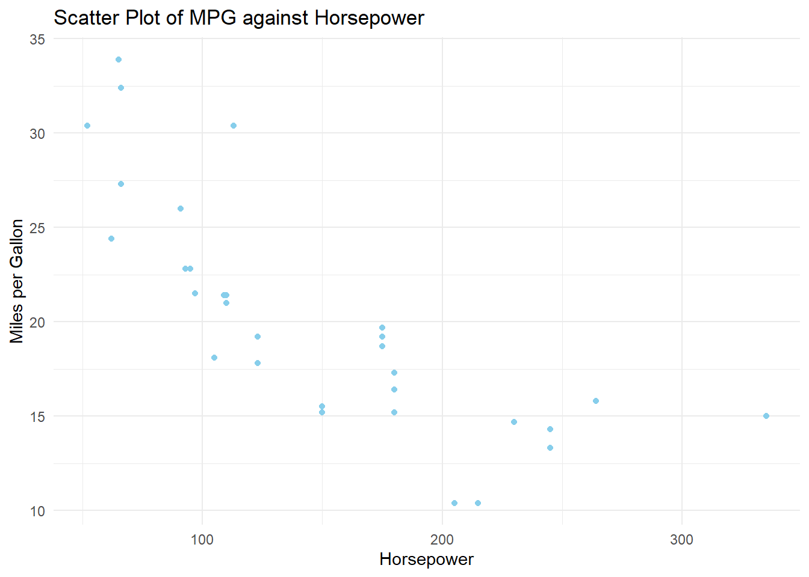
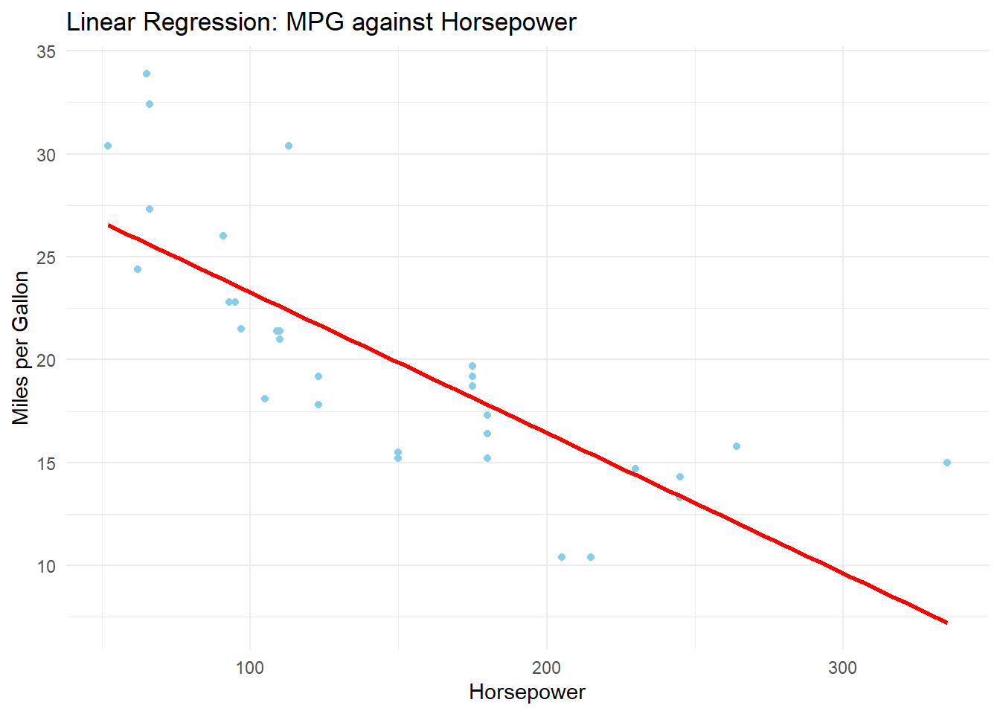
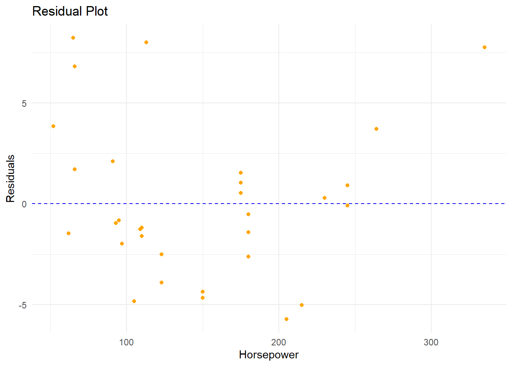
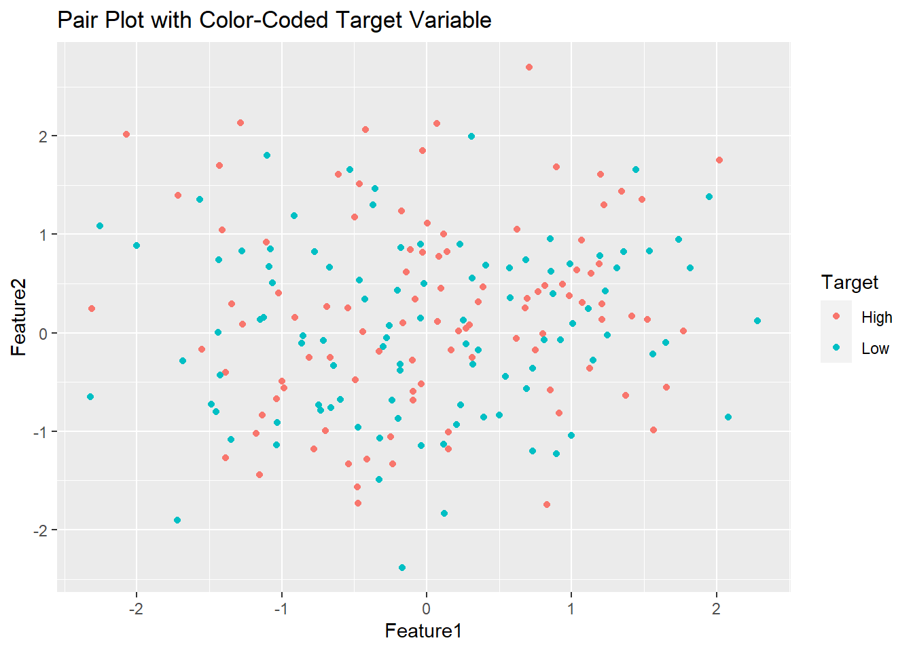

In this R script, we explore and analyze the mtcars dataset using the ggplot2 library and statistical functions. After loading the dataset, we visualize the relationship between miles per gallon and horsepower with a scatter plot. Subsequently, we subset the data to focus on cars with over 100 horsepower and perform a t-test to compare miles per gallon between high and low horsepower cars. A linear regression model is then constructed to predict miles per gallon based on horsepower, and the model is summarized for insights. Lastly, we demonstrate the use of the linear model to predict the miles per gallon for a new car with 150 horsepower, showcasing a comprehensive approach to data exploration, visualization, hypothesis testing, and predictive modeling in R.
# Load required librarieslibrary(ggplot2)library(ggthemes)# Load the built-in mtcars datasetdata(mtcars)# Display the structure of the datasetstr(mtcars)
# Summary statistics of the datasetsummary(mtcars)
mpg cyl disp hp
Min. :10.40 Min. :4.000 Min. : 71.1 Min. : 52.0
1st Qu.:15.43 1st Qu.:4.000 1st Qu.:120.8 1st Qu.: 96.5
Median :19.20 Median :6.000 Median :196.3 Median :123.0
Mean :20.09 Mean :6.188 Mean :230.7 Mean :146.7
3rd Qu.:22.80 3rd Qu.:8.000 3rd Qu.:326.0 3rd Qu.:180.0
Max. :33.90 Max. :8.000 Max. :472.0 Max. :335.0
drat wt qsec vs
Min. :2.760 Min. :1.513 Min. :14.50 Min. :0.0000
1st Qu.:3.080 1st Qu.:2.581 1st Qu.:16.89 1st Qu.:0.0000
Median :3.695 Median :3.325 Median :17.71 Median :0.0000
Mean :3.597 Mean :3.217 Mean :17.85 Mean :0.4375
3rd Qu.:3.920 3rd Qu.:3.610 3rd Qu.:18.90 3rd Qu.:1.0000
Max. :4.930 Max. :5.424 Max. :22.90 Max. :1.0000
am gear carb
Min. :0.0000 Min. :3.000 Min. :1.000
1st Qu.:0.0000 1st Qu.:3.000 1st Qu.:2.000
Median :0.0000 Median :4.000 Median :2.000
Mean :0.4062 Mean :3.688 Mean :2.812
3rd Qu.:1.0000 3rd Qu.:4.000 3rd Qu.:4.000
Max. :1.0000 Max. :5.000 Max. :8.000
# Plotting a scatter plot of mpg against hp with ggplot2ggplot(mtcars, aes(x = hp, y = mpg)) +geom_point(color ="skyblue") +# Add color to pointslabs(title ="Scatter Plot of MPG against Horsepower",x ="Horsepower",y ="Miles per Gallon") +theme_minimal() # Use a minimal theme

# Create a subset of the dataset for cars with more than 100 horsepowerhigh_hp_cars <-subset(mtcars, hp >100)# Display the first few rows of the subsethead(high_hp_cars)
# Perform a t-test comparing miles per gallon (mpg) between high and low horsepower carst_test_result <-t.test(mtcars$mpg, high_hp_cars$mpg)print(t_test_result)
Welch Two Sample t-test
data: mtcars$mpg and high_hp_cars$mpg
t = 1.906, df = 52.988, p-value = 0.06209
alternative hypothesis: true difference in means is not equal to 0
95 percent confidence interval:
-0.1381627 5.4150648
sample estimates:
mean of x mean of y
20.09062 17.45217
# Linear regression model to predict mpg based on horsepowerlinear_model <-lm(mpg ~ hp, data = mtcars)# Display the summary of the linear modelsummary(linear_model)
Call:
lm(formula = mpg ~ hp, data = mtcars)
Residuals:
Min 1Q Median 3Q Max
-5.7121 -2.1122 -0.8854 1.5819 8.2360
Coefficients:
Estimate Std. Error t value Pr(>|t|)
(Intercept) 30.09886 1.63392 18.421 < 2e-16 ***
hp -0.06823 0.01012 -6.742 1.79e-07 ***
---
Signif. codes: 0 '***' 0.001 '**' 0.01 '*' 0.05 '.' 0.1 ' ' 1
Residual standard error: 3.863 on 30 degrees of freedom
Multiple R-squared: 0.6024, Adjusted R-squared: 0.5892
F-statistic: 45.46 on 1 and 30 DF, p-value: 1.788e-07
# Predict the mpg for a new car with 150 horsepowernew_car_hp <-150predicted_mpg <-predict(linear_model, newdata =data.frame(hp = new_car_hp))print(paste("Predicted MPG for a car with", new_car_hp, "horsepower:", round(predicted_mpg, 2)))
[1] "Predicted MPG for a car with 150 horsepower: 19.86"
# Visualize the linear regression line along with the data pointsggplot(mtcars, aes(x = hp, y = mpg)) +geom_point(color ="skyblue") +geom_smooth(method ="lm", se =FALSE, color ="red") +# Add regression linelabs(title ="Linear Regression: MPG against Horsepower",x ="Horsepower",y ="Miles per Gallon") +theme_minimal()
`geom_smooth()` using formula = 'y ~ x'

# Residual plot to check model assumptionsresiduals <-resid(linear_model)ggplot(mtcars, aes(x = hp, y = residuals)) +geom_point(color ="orange") +geom_hline(yintercept =0, linetype ="dashed", color ="blue") +# Add horizontal line at y = 0labs(title ="Residual Plot",x ="Horsepower",y ="Residuals") +theme_minimal()

The linear regression analysis of the mtcars dataset reveals a significant negative relationship between horsepower and miles per gallon (mpg). The model indicates that, on average, each unit increase in horsepower is associated with a decrease of 0.0682 units in mpg. The overall fit of the model is reasonable, with a low p-value and an adjusted R-squared value of 0.5892, indicating that approximately 58.92% of the variability in mpg can be explained by the linear relationship with horsepower. In practical terms, higher horsepower tends to be linked with lower fuel efficiency in the examined dataset.
SVSM RANDOM FOREST DECSISION TREE AND NAIVE BAYES MACHINE LEARNING MODEL
In this code, we are exploring the application of different machine learning models to a randomly generated dataset. The dataset consists of three features (Feature1, Feature2, and Feature3) and a binary target variable (Target) with classes “Low” and “High.” Four distinct models are trained on the training set: Support Vector Machine (SVM), Random Forest, Decision Tree, and Naive Bayes. Subsequently, each model is used to make predictions on the test set, and confusion matrices are generated to evaluate their performance. The confusion matrices provide insights into the accuracy of predictions, highlighting true positive, true negative, false positive, and false negative outcomes for each model. This analysis serves to compare and contrast the effectiveness of the diverse machine learning approaches employed in the context of the given dataset.
Type rfNews() to see new features/changes/bug fixes.
Attaching package: 'randomForest'
The following object is masked from 'package:ggplot2':
margin
library(rpart)library(naivebayes)
naivebayes 0.9.7 loaded
library(ROCR)# Create a random well-structured DataFrameset.seed(456)n <-200random_data <-data.frame(Feature1 =rnorm(n),Feature2 =rnorm(n),Feature3 =rnorm(n),Target =factor(sample(c("Low", "High"), n, replace =TRUE)))# Display the first few rows of the datasethead(random_data)
Feature1 Feature2 Feature3 Target
1 -1.3435214 0.293886215 0.7173489288 High
2 0.6217756 1.052402224 -0.4173373241 High
3 0.8008747 -0.006435601 -0.0315243903 High
4 -1.3888924 -0.404523473 -0.9048116128 High
5 -0.7143569 -0.080917045 -0.0005219186 Low
6 -0.3240611 -1.072424293 1.3978537288 Low
# Split the dataset into training and testing setsset.seed(123)train_index <-createDataPartition(random_data$Target, p =0.7, list =FALSE)train_data <- random_data[train_index, ]test_data <- random_data[-train_index, ]# Support Vector Machine (SVM) modelsvm_model <-svm(Target ~ ., data = train_data)svm_predictions <-predict(svm_model, newdata = test_data)# Random Forest modelrf_model <-randomForest(Target ~ ., data = train_data, ntree =100)rf_predictions <-predict(rf_model, newdata = test_data)# Decision Tree modeldt_model <-rpart(Target ~ ., data = train_data, method ="class")dt_predictions <-predict(dt_model, newdata = test_data, type ="class")# Naive Bayes modelnb_model <-naiveBayes(Target ~ ., data = train_data)nb_predictions <-predict(nb_model, newdata = test_data)# Evaluate models using caret packagesvm_metrics <-confusionMatrix(svm_predictions, test_data$Target)rf_metrics <-confusionMatrix(rf_predictions, test_data$Target)dt_metrics <-confusionMatrix(dt_predictions, test_data$Target)nb_metrics <-confusionMatrix(nb_predictions, test_data$Target)# Print confusion matricesprint("Confusion Matrix for SVM:")
[1] "Confusion Matrix for SVM:"
print(svm_metrics)
Confusion Matrix and Statistics
Reference
Prediction High Low
High 14 19
Low 16 11
Accuracy : 0.4167
95% CI : (0.2907, 0.5512)
No Information Rate : 0.5
P-Value [Acc > NIR] : 0.9225
Kappa : -0.1667
Mcnemar's Test P-Value : 0.7353
Sensitivity : 0.4667
Specificity : 0.3667
Pos Pred Value : 0.4242
Neg Pred Value : 0.4074
Prevalence : 0.5000
Detection Rate : 0.2333
Detection Prevalence : 0.5500
Balanced Accuracy : 0.4167
'Positive' Class : High
print("Confusion Matrix for Random Forest:")
[1] "Confusion Matrix for Random Forest:"
print(rf_metrics)
Confusion Matrix and Statistics
Reference
Prediction High Low
High 18 20
Low 12 10
Accuracy : 0.4667
95% CI : (0.3367, 0.6)
No Information Rate : 0.5
P-Value [Acc > NIR] : 0.7405
Kappa : -0.0667
Mcnemar's Test P-Value : 0.2159
Sensitivity : 0.6000
Specificity : 0.3333
Pos Pred Value : 0.4737
Neg Pred Value : 0.4545
Prevalence : 0.5000
Detection Rate : 0.3000
Detection Prevalence : 0.6333
Balanced Accuracy : 0.4667
'Positive' Class : High
print("Confusion Matrix for Decision Tree:")
[1] "Confusion Matrix for Decision Tree:"
print(dt_metrics)
Confusion Matrix and Statistics
Reference
Prediction High Low
High 22 22
Low 8 8
Accuracy : 0.5
95% CI : (0.3681, 0.6319)
No Information Rate : 0.5
P-Value [Acc > NIR] : 0.55129
Kappa : 0
Mcnemar's Test P-Value : 0.01762
Sensitivity : 0.7333
Specificity : 0.2667
Pos Pred Value : 0.5000
Neg Pred Value : 0.5000
Prevalence : 0.5000
Detection Rate : 0.3667
Detection Prevalence : 0.7333
Balanced Accuracy : 0.5000
'Positive' Class : High
print("Confusion Matrix for Naive Bayes:")
[1] "Confusion Matrix for Naive Bayes:"
print(nb_metrics)
Confusion Matrix and Statistics
Reference
Prediction High Low
High 10 17
Low 20 13
Accuracy : 0.3833
95% CI : (0.2607, 0.5179)
No Information Rate : 0.5
P-Value [Acc > NIR] : 0.9741
Kappa : -0.2333
Mcnemar's Test P-Value : 0.7423
Sensitivity : 0.3333
Specificity : 0.4333
Pos Pred Value : 0.3704
Neg Pred Value : 0.3939
Prevalence : 0.5000
Detection Rate : 0.1667
Detection Prevalence : 0.4500
Balanced Accuracy : 0.3833
'Positive' Class : High
# Colorful EDA Visualizations# Example: Pair plot with color-coded Target variableggplot(random_data, aes(x = Feature1, y = Feature2, color = Target)) +geom_point() +labs(title ="Pair Plot with Color-Coded Target Variable")

# Feature Importance Plot for Random ForestvarImpPlot(rf_model, main ="Random Forest - Feature Importance")